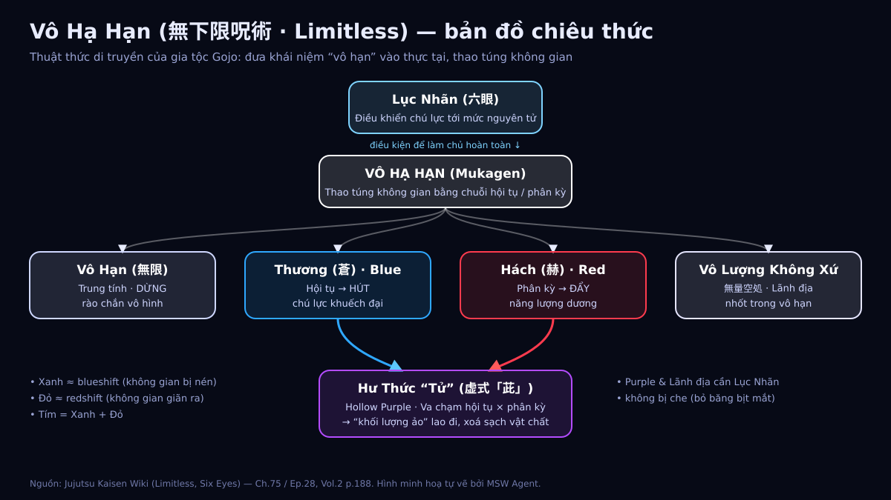
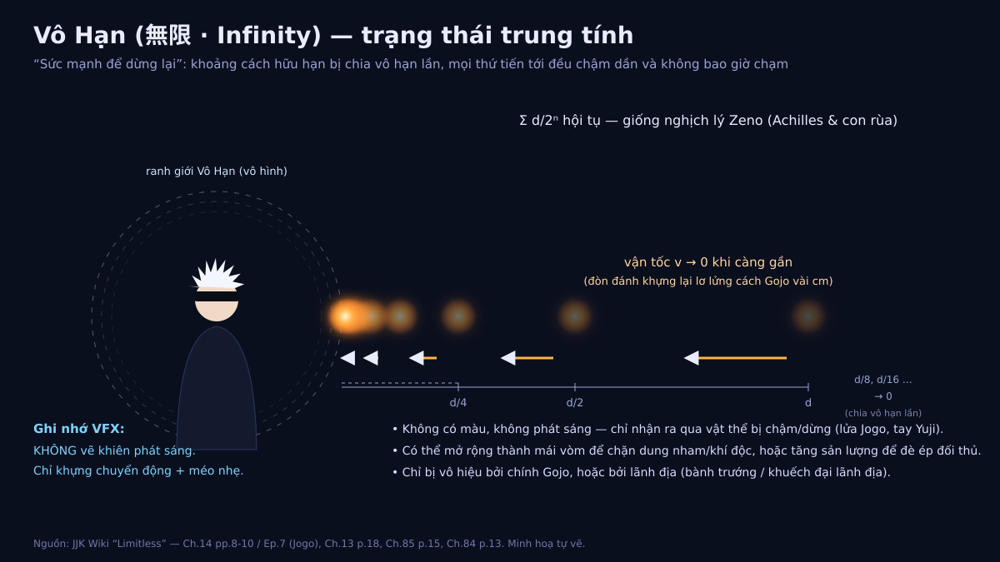
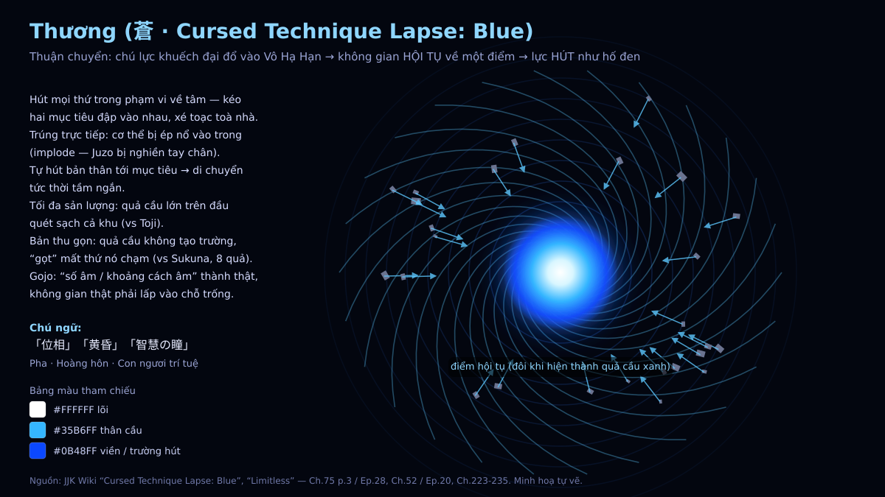
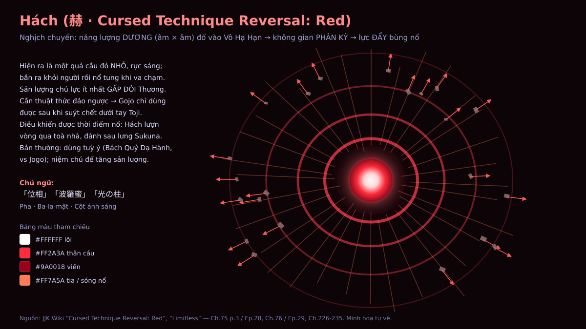
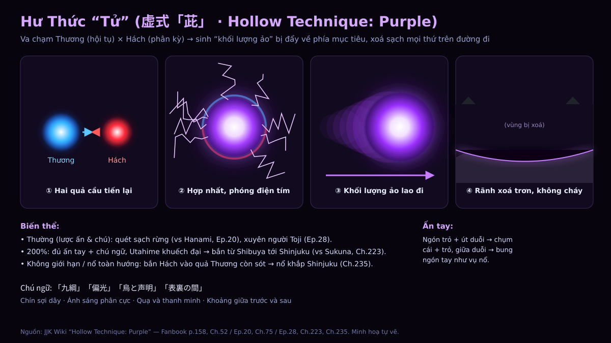
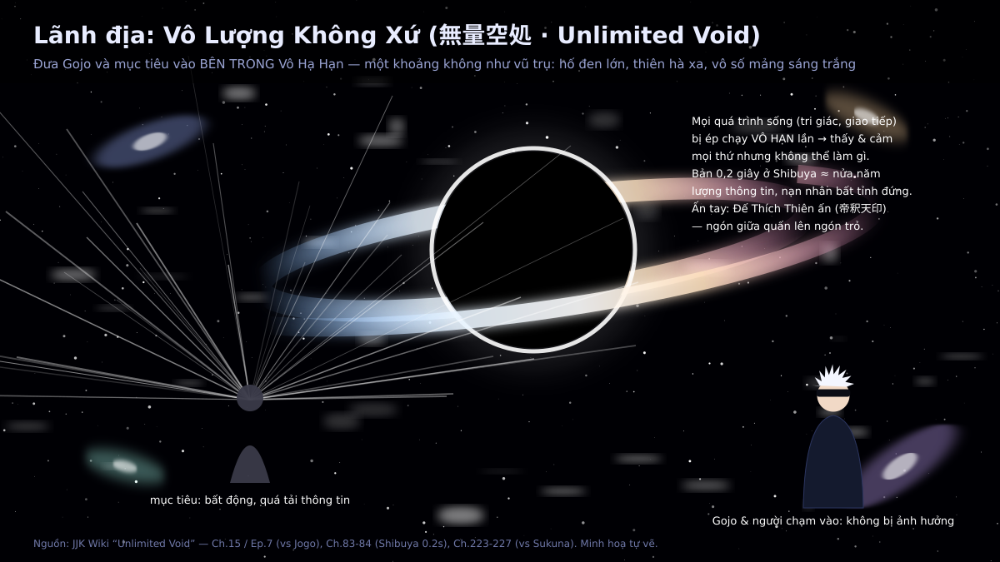
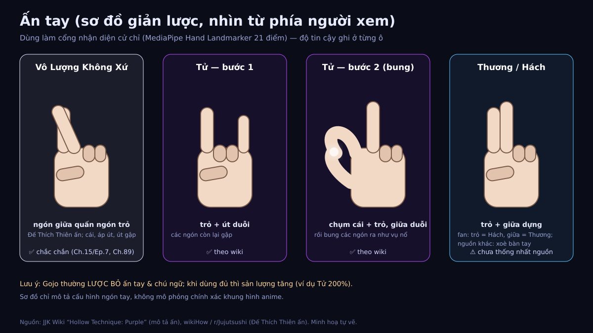

Tài liệu chuẩn về cơ chế từng chiêu, ấn tay, chú ngữ và mốc chương/tập gốc, kèm 7 ảnh minh hoạ tự vẽ. Đây là mức hiểu hiện tại của agent, dùng làm căn cứ trước khi dựng hiệu ứng.
Vô Hạ Hạn đưa khái niệm “vô hạn” vào thực tại. Chỉ người có thêm Lục Nhãn mới làm chủ được cả 5 bậc.

Sức mạnh DỪNG: chia khoảng cách thành vô hạn lần → vật tiến tới chậm dần và không bao giờ chạm. Gần như vô hình.

Thuận chuyển: không gian hội tụ về một điểm → lực HÚT như hố đen. Chú ngữ “Pha · Hoàng hôn · Con ngươi trí tuệ”.

Nghịch chuyển: năng lượng dương, không gian phân kỳ → lực ĐẨY. Quả cầu đỏ nhỏ rồi nổ; sản lượng gấp đôi Thương.

Va chạm Thương × Hách → “khối lượng ảo” lao đi, xoá sạch vật chất trên đường đi. Có bản thường, bản 200%, bản nổ toàn hướng.

Lãnh địa: hố đen lớn, thiên hà xa, vô số mảng sáng trắng. Mục tiêu bị ép xử lý thông tin vô hạn → bất động.

Sơ đồ cấu hình ngón tay để làm cổng nhận diện cử chỉ, kèm mức độ tin cậy của từng ấn.

Không màu, không phát sáng. Chỉ khựng chuyển động + méo nhẹ lớp không gian sát người.
Quả cầu xanh một mình vô nghĩa nếu không có mảnh vụn, bụi, tia sáng cong vào tâm.
Tương phản hướng với Thương: hạt và tia bắn ra, cầu nhỏ rồi mới nổ.
Khối cầu tím có mạch cuộn bên trong, khoét rãnh trơn — không phải tia sáng xuyên thẳng.
Danh sách đầy đủ trong sources.md. Ba repo hợp nhất với dự án Three.js + Hand Landmarker:
| Repo | Nội dung | Vì sao hợp |
|---|---|---|
reinesana/SAT0RU | Blue, Red, Purple, Infinite Void | Nhiều sao nhất (317), đủ chuỗi chiêu |
m0Corut/jjk-limitless-ar | Red → Blue → hợp nhất → Purple | Có đúng thứ tự dung hợp |
collidingScopes/threejs-handtracking-101 | Khung Three.js + MediaPipe | Nền sạch để gắn hiệu ứng |
Không tìm thấy source cho Gojo trên Shadertoy, CodePen hay TouchDesigner (chỉ có video, không có file dự án). Vô Hạn và Vô Lượng Không Xứ đúng mô tả wiki thì phải tự viết shader.